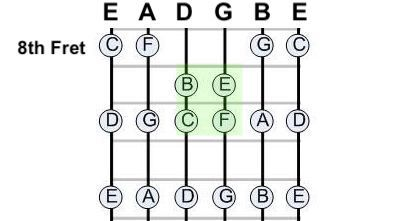
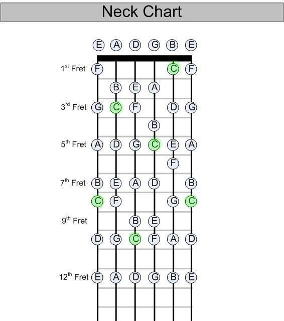

Guitar Lessons for Guitarists |
|---|
Guitar Lessons for Guitarists "Because the only difference between a guitarist and a great guitarist is just a bunch of bloody guitars." -John Lennon |
| www.remotebb.com Session Saturday, April 25, 2020 4:15pm-5:15pm |
Welcome to Guitar Lessons for Guitarists
You have always been a guitarist.
You had an old beat up guitar. You kind of knew how to play it, but it was old and beat up, so when you played it, it didnt sound good. It made it sound like you didn't know how to play.
After years of the beat up guitar makning you seem like less of a guitarist, you realized that you wanted to be a professional, so you went out and bought yourself a nicer guitar. You know, one that will sound better than that piece of junk?
When it arrived, you were pumped to officially become an amateur guitarist. The thing was, it didn't make you feel like a professional guitarist. It became clear that you needed another guitar. For the next couple days, you researched and researched, and found the best possible guitar to push yourself from up from the amateur to the professional level of guitarism.
Finally you found it.
It was perfect, and you were sure it would launch you into becoming a professional guitarist. So you bought it. It took forever to ship, but when it arrived, it was so beautiful. You played with it a little bit, and after a few minutes of frustration it became clear that you were not yet a professional. Buying this guitar had only elevated you from amateur to intermediate guitarist.
You soon realized that it didnt matter how much a guitar costs, or how much you play it, the only way to become a professional is to amass a huge collection of guitars. So you started ordering them.
With every guitar that came, you elevated your guitarist status. You are currently a senior guitarist, and at this rate of guitar purchasing, you will become a professional in no time. You are on the path to becoming a guitar legend like Jimi Hendrix.
Just keep ordering guitars... you'll get there.
In the meantime...
Most guitar professionals claim that when they are waiting for new guitars to be delivered, they spend a little bit of time playing their old guitars. Totally an optional thing to do. If you ever decide to play around on your old guitars, one of the best things to learn is the shape and pattern of the major scale, since everything else you will learn is based off of it. A scale is 7 different notes, spaced out in a specific way. All scales have a root note, which is the note that tends to stand out when that scale is played. Let's say you wanted to play around with this idea.
Let's make this whole thing easy to read
If you decide to root your major scale on the note of C, it conveniently makes the other 6 notes in the scale all the normal letters of the alphabet, with no hashtags or little b's any where*.
Just CDEFGABC
The root (first) note is C
The second note is D
The third note is E
The fourth note is F
The fifth note is G
The sixth note is A
The seventh note is B
So clean.
*Pretty nice not having to worry about hashtags or little b's.
(The only reason those hash tags (sharps) and little b's (flats) are ever there is to make it so you can write any scale using all 7 of the letters without having to repeat one)
Okay, it's Jam Time
No sharps or flats? Solid alphabet? Sweet. Let's do that. Let's start on the note of C. Let's try it with our root note on the Low E string. That would mean you need to put your finger on the 8th fret of the low E string. That's a C. Trust me.
Play the circled notes.
Starting with the C (8th fret lowest octave E string) seen at the top left of this diagram, work your all the way through the alphabet across the whole fretboard. Sounds pretty happy! Keep jammin on that, and familiarize yourself with the pattern.

Work your way up and down this bad boy a couple times.
That's what a major scale feels like.
Does it feel familiar?
Does it feel the same as the E major scale you were practicing?
Pattern
It seems like the notes are all spaced apart from eachother except for the 'BC' and the 'EF'

Referring back to our list:
The root (first) note is C
The second note is D
The third note is E
The fourth note is F
The fifth note is G
The sixth note is A
The seventh note is B
The eigth (first) note is C
It seems that there are spaces in between all of the notes, except for between the 3rd and 4th note, and the 7th and 8th note.
Notes 3 & 4 are next to each other
Notes 7 & 8 are next to each other
Scale building guitarist
Let's play a major scale
To play a major scale, you start on any note, which we call the Root Note.
- Place your finger on the fret of the Root Note, and play it (#1)
- Skip a fret and play the next note (#2)
- Skip a fret and play the next note (#3)
- Play the next note without skipping a fret (#4)
- Skip a fret and play the next note (#5)
- Skip a fret and play the next note (#6)
- Skip a fret and play the next note (#7)
- Play the next note without skipping a fret (#8/#1/Root)
It's that straight forward.
Pro Tip
Try to keep your hand in one place.
You may run out of room if you try to do this whole thing on the same string.
When a note is too far for you to reach, find it on the next string over, and resume your skip/play from there.
This will help you.
The formula for a major scale from a root note
| note | Major Scale |
|---|---|
| 1 | Root |
| 2 | Skip |
| 3 | Skip |
| 4 | Play |
| 5 | Skip |
| 6 | Skip |
| 7 | Skip |
| 8 / 1 | Play (Root) |
The diagram below shows the full neck of a guitar with all of the notes of the C major scale in circles.
If you were to pick any of the C's from the diagram, you will notice that the notes below (and above) it follow this exact pattern.

It is also cool that there is one C on every string (above the 12th fret). It actually seems like theres one of every note on each string. That means whatever scale you want to jam on, you find a way to start it on any string.
Homework: Make it sound interesting
-
The major scale has a very happy sound to it... which is cool...
But it's pretty boring sounding.
If you feel like making your jam sound a little bit more sad, and by sad I mean interesting, try this:- Play the major scale you just learned, but change one thing:
- Shift the third note of the scale down one half step.
- Play the major scale you just learned, but change one thing:
-
Play around with the scale now that you've made the 3rd note flat, and see if it sounds any different.
What did we just do?
It sounds so sad!
Such a dramatic difference, and we only changed one tiny little note.
We just made the third note flat, and by doing so transformed this happy sounding major scale into sad and interesting minor scale.
Your mission:
What would happen if, instead of choosing the 3rd note we decided to flatten a different one?
Now that you are becoming familiar with the sound of a minor key, try to choose a different note to flatten instead of the 3rd, and jam on that.
All of the different sounds and emotions you can emote with just this one little tweak on the major scale is unbelievable.
There are unlimited possiblities.
Have fun.
"The world is your oyster, so fill it with guitars"
-Jimi Hendrix
Guitar Lessons for Guitarists |
|---|
Guitar Lessons for Guitarists "Because the only difference between a guitarist and a great guitarist is just a bunch of bloody guitars." -John Lennon |
| www.remotebb.com Session Saturday, April 25, 2020 4:15pm-5:15pm |